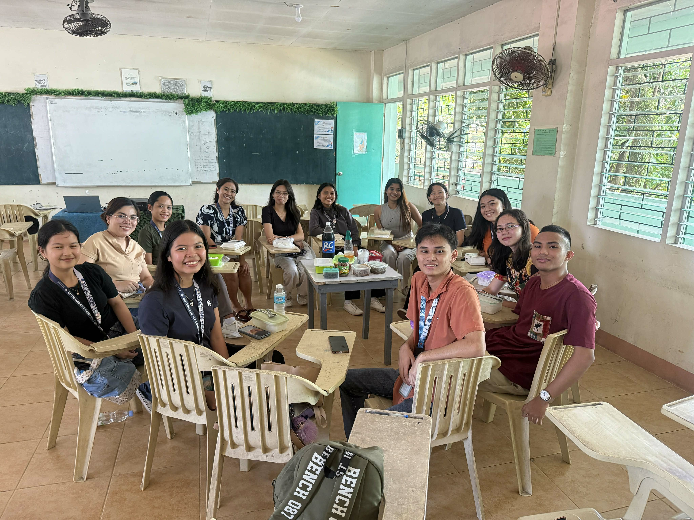
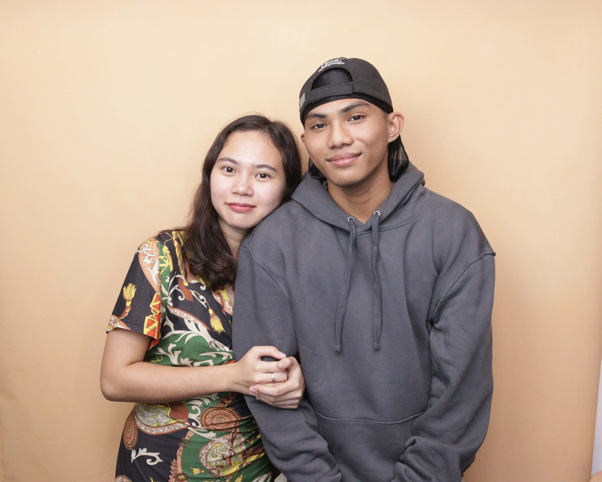

After our morning class with Sir Richard, we had lunch all together. Our meals were all gathered on the table and shared – we had our own rice but the ulam was for everyone.
Morning Class with Sir Richard
Started the day with Sir Richard's class. The usual – lectures, discussions, and trying to stay awake. But everyone was looking forward to what came after class: the lunch we planned yesterday. The veggies we bought from the palengke were finally going to be used.
Lunch with Classmates
After class, we finally had our planned lunch! Everyone gathered and we put out all the food on the table. The veggies we bought yesterday came together with whatever everyone else brought. It was chaotic but in the best way. Everyone just dug in, shared stories, and laughed while eating. We had our own rice, but the ulam was shared family-style.

Ma'am Pauline Joined + Ice Cream
Our afternoon professor, Ma'am Pauline, even joined our lunch! It was nice having her eat with us – made the whole thing feel more like a family gathering than just classmates eating together. She even bought ice cream for everyone! Such a simple gesture but it really made the day special. We all ate ice cream together and just hung out before the afternoon class started. It's not every day a professor joins your lunch and brings dessert.
Ayala Mall & Photobooth
After our afternoon class, a group of us headed to Ayala Mall. Elaine and I broke off from the group and decided to hit the photobooth. It's becoming our thing, I guess. We took a set of photos – the usual poses, some funny faces, the works. The photobooth strips are starting to pile up. I might need a bigger bulletin board soon.

Walked around the mall for a bit, did some window shopping, then headed home. It was a long but really fun day. Days like these make college life memorable.
Good food, good company, and photobooth memories. Days like these are worth remembering.
Tomorrow's Sunday – time to rest and recharge.
— CJ